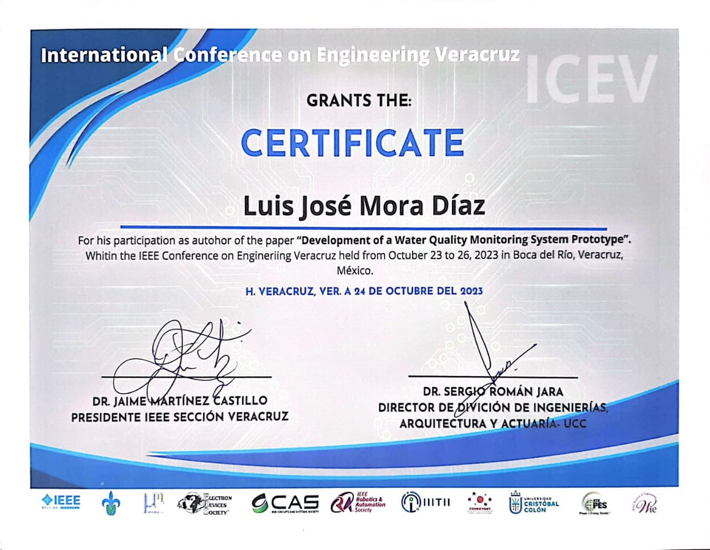
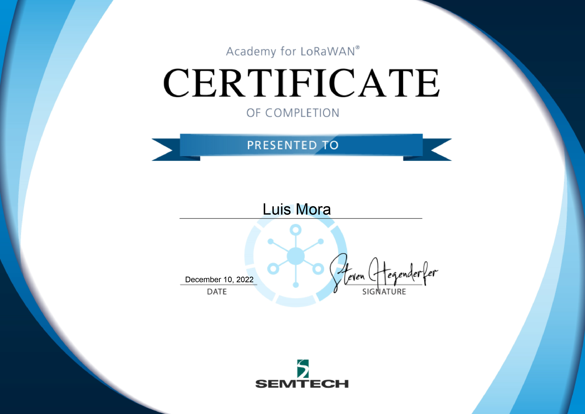
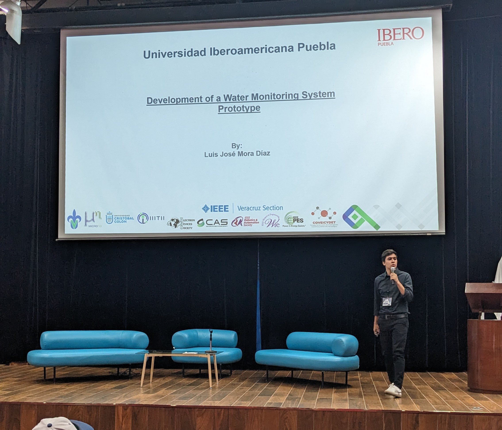

I am a 28 year old Costa Rican student living in Puebla, Mexico, currently in my last semester of Communications and Electronics Engineering degree at Universidad beroamericana Puebla. In addition to my university studies, I have obtained certifications and skills independently, demonstrating my self-education. My academic development has allowed me to access scholarships and participate in conferences, where I have faced significant challenges.
I particularly appreciate teamwork, resilience and commitment as fundamental principles. My creativity is reflected in my constant search of learning, exploring topics beyond my academic field in order to expand my knowledge and skills.
Link to CVabout
Along my academic career, I have shown outstanding skills in innovation, self-learning, leadership and problem solving. My proactive and creative approach has allowed me to successfully face challenges and lead teams successfully towards common goals.
My adaptability is shown by my ability to integrate fluidly into diverse environments. In this context, I have demonstrated my curiosity and constant desire for knowledge, which has enabled me to successfully face a variety of obstacles.
I continuously pursue to expand my abilities in microelectronics and digital design, key areas that I consider fundamental to my professional development, given their importance in the industry and their crucial impact on technological advancement. I also have a strong interest in topics such as renewable energies and the development of self-sufficient systems. I believe that combining my technical skills with these areas of interest will provide me with a solid foundation to contribute significantly to innovative and sustainable projects.
I am committed to continuous learning and constant improvement, and I am confident that my versatile profile and interdisciplinary skills position me as a professional capable of making a difference.
education
Universidad Iberoamericana Puebla
Communications and Electronics Engineering Degree
Fall 2019 - present
Currently in the 9th semester
I have a 25% tuition scholarship granted by the University. In addition, I hold another scholarship from the Federico Gómez Suárez Foundation for my outstanding academic performance.
- Member of the IEEE Ibero Puebla Student Branch as Vice President from December 2023 to present.
- Member of the Student Council as a representative of the communications and electronics engineering career for the 2022-2023 and 2023-2024 terms.
- Exchange Program at University of Antwerp, Belgium from september 2022 to february 2023
- Member of the Technical Council of the University as representative of the Communications and Electronics Engineering career during the period 2022-2023.

achievements
- First Prize at Hack For Good FGS Scholarship 2023
- Participation as author in IEEE ICEV 2023 ( Link to paper )
- Participation in HackStem 2023
- In Move Program (Team building) 2023 by Genus
- Academy for LoRaWAN by Semtech 2022
- Coursera Python Specialization by University of Michigan 2021 ( Link )
I won the first prize, a US$5000 grant, for my project "Development of a Water Monitoring System Prototype". This achievement was reached by submitting my project in the Hack for Good competition, organized by the Federico Gómez Suárez Foundation.

I made a presentation entitled "Development of a Prototype Water Monitoring System" at the IEEE International Engineering Conference in Veracruz. Veracruz.
I actively participated in the international HackStem 2023 Hackathon, serving on a multidisciplinary team. For two days, we collaborated to develop a tool with the purpose of promoting environmental education and the STEM movement in children from New Delhi, specifically in the range of 5 to 12 years old.

Workshop to recognize and merge individual skills and limitations in order to implement strategies to achieve team goals.

This course aims to provide a deeper knowledge of LoRa® and LoRaWAN® technologies.
This specialization is made up of 5 courses that cover basic Python fundamentals, data structures, access to web data, databases and web data processing.

works

Bonasa / IDIT 2023. I worked with the company Bonasa and the Institute of Design and Technological Innovation of the Universidad Iberoamericana Puebla in the design and implementation of an IoT control device for water pumps. The objective of the product in question was to control water pumps for domestic homes. The system provided detailed data about water flow, pressure and power consumption. In addition, it had the ability to automatically turn on the pump according to the pressure setting configured by the user. It also had fault detection functions, such as low pressure, lack of water detection and pump motor maintenance. All this data was stored in the cloud and could be viewed by the user through a web application from any device.
In the project, I was in charge of the digital design and programming of the controller (C in ESP32), sensor calibration, design for manufacturing (SMD), management of the cloud database (Google Firebase), interconnection with the pump (Power Electronics), 3D printing and assembly.
IEEE ICEV 2023. This paper is of my own authorship and presents the development of a prototype water monitoring system designed to measure dissolved oxygen, electrical conductivity, salinity, total dissolved solids, hydrogen potential, temperature, and turbidity. Physically, the prototype consists of a plastic hollow body buoy floating in a body of water. The implementation of the device is contemplated in a lotic system belonging to the Atoyac River in Puebla, Mexico.
The proposed system is composed of low-cost sensors and LoRa (Long Range) communication technology to enable real-time data collection, geolocation and analysis, providing an efficient and low-cost solution. The main differences of this system with other commercial devices are its manufacturing cost, easy implementation, sustainable energy use and its way of communication.

HackStem 2023. Over the course of two days, we collaborated to develop a tool to promote environmental education and the STEM approach among children in New Delhi, ages 5-12. The resulting prototype was an interactive video game with electricity generation capabilities for storage..
During the course of the project, I developed the power electronics, carried out the calibration of the device, managed the wireless communication and was involved in research on the energy produced and its applications.


Differential phonocardiograph 2022. This project was developed in collaboration with two colleagues as part of the Filters course at the university. We created a prototype of a differential phonocardiograph capable of detecting sounds with cardiac characteristics, canceling ambient noise and processing low or high frequencies of the heart sound, according to the user's selection. We were able to visualize the sound trace on an oscilloscope and listen to the original sound, all this by using low-cost microphones. In the project, I was in charge of the elaboration of the filters and signal processing.